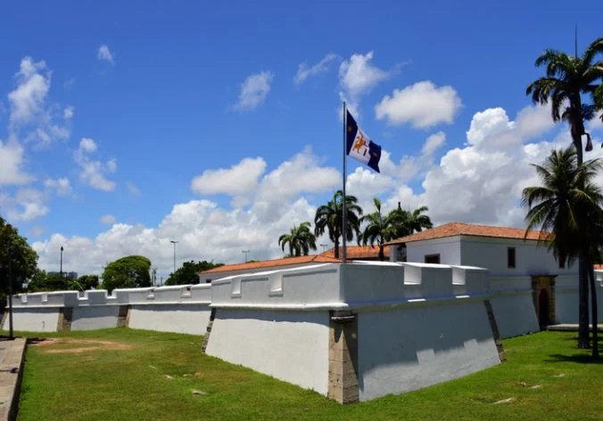

Pontos turísticos de Recife
Marco Zero

O Marco Zero, na Praça Rio Branco, é conhecido como local de fundação da cidade do Recife e também como ponto inicial de contagem das distâncias calculadas a partir da cidade. O lugar é um dos pontos mais importantes na capital Pernambucana, pois é também uma região de forte movimento durante o Carnaval. Aproveite sua visita para tirar uma foto com os dois marcos (o antigo e o novo), observar a vista para o Parque de Esculturas e os edifícios do Centro Cultural da Caixa e da Associação Comercial de Pernambuco. Se quiser fazer compras, vale a pena visitar o novo Mercado de Artesanato, que também fica no local.
Capela Dourada

A construção da capela foi fruto de uma iniciativa dos Irmãos da Venerável Ordem Terceira de São Francisco das Chagas, criada em Recife no século XVI. Sendo abastados muitos de seus membros, decidiram erguer uma capela para os noviços da Ordem. A pedra fundamental foi lançada em 13 de maio de 1696 pelo Capitão General Caetano de Melo Castro, sendo mestre-construtor o Capitão Antônio Fernandes de Matos. A capela foi aberta ao público em 15 de setembro de 1697, com missa presidida pelo Comissário Visitador Frei Jerônimo da Ressurreição, embora ainda não estivesse inteiramente terminada, permanecendo em obras até 1724. Nascendo em uma época de grande prosperidade na região, ao longo do tempo a capela recebeu melhorias e rica decoração barroca, e sua condição atual data basicamente dos séculos XVII e XVIII. Seu nome deriva da grande quantidade de ouro empregada na cobertura da exuberante talha de madeira que forra praticamente todos os espaços das paredes, altares e teto. A sua construção e decoração contou com a participação de diversos artistas de importância na região. O teto com os arcos externo, do cruzeiro e da capela-mor, bem como mobiliário auxiliar, são obra de Luís Machado, do século XVII. O teto é dividido em caixotões para painéis pintados a óleo, com cenas diversas. A capela-mor, com um nicho central para um grande crucifixo e nichos laterais para São Cosme e São Damião, foi entalhada por Antônio Martins Santiago em 1698. Em 1724, as obras foram concluídas, e a riqueza ornamental, com sua talha dourada e preciosas pinturas, em muito superava àquela presente na igreja do convento.[1] Ao longo das paredes laterais existe uma série de painéis de azulejos, altares menores com importante estatuária, dos quais se destacam o de Santa Isabel, o do Cristo atado à coluna, e o do Senhor dos Passos (com uma imagem de roca em tamanho natural com incrustações de rubis), e dezenas de painéis pintados representando santos e personificações das virtudes da Fé, Esperança, Caridade e Constância. Tristemente confessamos que nem mesmo o arquivo da Ordem, pacientemente rebuscado, nos pôde adiantar nomes de artistas que houvessem trabalhado nesses maravilhosos quadros. Apenas sabemos que referidas pinturas foram executadas entre os anos de 1699 e 1700 e os painéis do forro entre 1701 e 1702, segundo o livro de RECEITA E DESPESA (Trecho retirado do Livro do Historiador Fernando Pio, Ex-Ministro da Ordem Terceira de São Francisco que escreveu tudo sobre a Capela Dourada com pesquisa feita no acervo da Venerável Ordem Terceira do Glorioso Patriarca São Francisco de Assis do Recife). De 1776 a 1777 sofreu o forro da capela sério reparo, sem prejuízo dos caixotões, amparados por mãos cuidadosas, sendo dignas de maior atenção duas, de grandes dimensões, junto às bancadas, representando a prisão e morte de mártires franciscanos, cujos algozes, curiosamente, tiveram suas faces apagadas e riscadas, em data desconhecida, pela indignação de algum devoto. Na sacristia existe ainda mobiliário esculpido em jacarandá, datando de 1762, além de uma mesa de mármore e de um lavabo importados de Estremoz. É um dos melhores lugares de cunho religioso para se visitar, faça uma visita.
Museu da Cidade de Recife
O Museu da Cidade de Recife é sediado no Forte das Cinco Pontas, construído por imigrantes holandeses em 1630. Além de apreciar as belezas da arquitetura do forte, o visitante também entra em contato com exposições enriquecedoras, que oferecem, além de um grande contato com a história brasileira, uma experiência única e inesquecível.